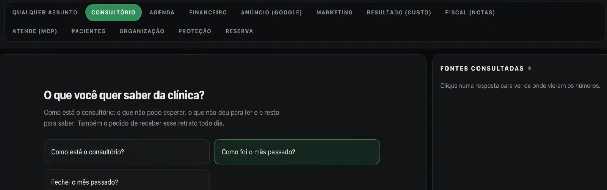
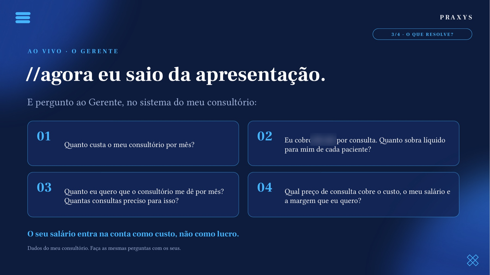

Praxys Assistant · o sistema por dentro
Tudo o que ele faz. E do que ele depende.
Um sistema integrado de gestão do consultório: atendimento automático, organização de cada contato e funcionários de IA que leem os seus dados e respondem com número. Aqui está cada parte, com o status real de hoje.
Agendar demonstração no WhatsApp
Jorge Ferreira · fundador da Praxys · médico, usa o sistema no próprio consultório
Como os dados andam
Do paciente que escreve à decisão que você toma.
WhatsApp, Instagram ou Facebook, a qualquer hora.
Cloud API da Meta, no número do consultório, em Coexistência.
Responde, marca, confirma. Assunto clínico vai para a equipe.
Cada contato vira card, com etapa, histórico e origem.
Leem agenda, financeiro e anúncios. Só leem, não alteram.
Responde com o número e a fonte. Quem decide é você.
Funções e status
O que está pronto e o que depende do seu consultório.
Sem promessa escondida: o que depende de integração está escrito. O escopo do seu consultório é definido na demonstração e aprovado por escrito antes da contratação.
| Função | O que faz | Status |
|---|---|---|
| Atendimento 24h no WhatsApp | Responde e marca nas regras que você definir. Avisa que é assistente virtual. Entende áudio; foto vai para a secretária. | Disponível Agenda: depende da integração |
| Caixa de entrada única | WhatsApp, Instagram e Facebook num lugar só. Mostra quem respondeu, e a equipe assume qualquer conversa. | Disponível |
| Confirmação e lembrete | Régua automática em modelos oficiais da Meta. A secretária vê quem não confirmou e escolhe avisar. | Disponível Tarifa da Meta paga pelo consultório |
| Kanban de leads | Todo contato vira card: novo contato, qualificação, proposta, negociação, com tempo parado. | Disponível |
| Origem do paciente | Google, Meta, site ou indicação no card. Cruza agenda com investimento em anúncio. | Depende da integração Agenda + Meta Ads / Google Ads |
| Histórico do paciente | Quem marcou, quem voltou, quem sumiu. Atendimento administrativo, sem prontuário. | Disponível |
| Paciente que não voltou | Identifica e organiza o contato com consentimento, em modelo oficial. Quem recusou fica de fora. | Depende do histórico da agenda |
| Sinal antes da consulta | Pix ou cartão antes do horário, quando você quiser usar. | Opcional · depende do banco |
| O Gerente | Você pergunta, ele chama os funcionários e responde com fonte e período. | Disponível |
| As 4 perguntas do dono | Custo do consultório, quanto sobra por consulta, consultas para a meta, preço que cobre custo, salário e margem. | Depende dos dados de custo |
| Limites de segurança | Sintoma ou urgência: orienta ligar 192 e passa para a equipe. Fora do escopo: para e chama um humano. | Disponível |
| Vídeo com avatar | Funcionário 19. | Em pausa |
Telas reais
O que você e a sua secretária veem na tela.
Prints do sistema em uso. Nomes fictícios; valores e textos sensíveis borrados.
KANBAN DE LEADS
Cada paciente na sua etapa.
Quantas oportunidades em cada coluna e quantas estão paradas. Cada card mostra o tipo de atendimento, a fonte e há quanto tempo está sem andar.

Tela real · nomes fictícios
ORIGEM
E de onde ele veio.
A fonte de cada contato fica no card: Google ou Meta (Instagram e Facebook), site ou indicação.
Depende da integração com anúncios e agenda
Tela real · nomes fictícios
AGENDA DO DIA
Não confirmou? Você escolhe avisar.
Marcados, confirmados e quem falta confirmar. Um toque avisa os que não responderam.

Tela real · dados borrados
Por dentro do sistema · vídeos
O seu consultório, por dentro.
As telas desta página, em movimento. Telas reais, nomes fictícios.
O Gerente
Um lugar só para perguntar.
Agenda, financeiro, anúncio e pacientes. Você escreve como falaria com a secretária. Ele diz quem respondeu, de onde tirou o número e se a conta foi conferida. Se a resposta estiver errada, você marca, e a equipe ajusta.

Tela real · nomes fictícios

Pergunta real: quantos contatos o anúncio trouxe na semana passada?
- Fonte: Google Ads e a contagem da secretária
- Período exato da conta
- Respondido por: Anúncio (Google)
- Números conferidos, e você diz se está certa

Aula aberta de 14/10 · as 4 perguntas feitas ao Gerente, ao vivo
As 4 perguntas de todo dono de consultório
A IA faz a conta. Você toma a decisão.
Na aula aberta de 14/10, o Gerente respondeu estas 4 perguntas ao vivo, com os dados do consultório do Jorge. Com os seus dados, ele responde as suas.
Quanto custa o meu consultório por mês?
Quanto sobra líquido para mim de cada consulta?
Quantas consultas faltam para a minha meta?
Qual preço cobre o custo, o meu salário e a margem que eu quero?
O seu salário entra na conta como custo, não como lucro. Depende dos dados de custo e da integração com a agenda.
Por trás do Gerente
25 funcionários de IA. Você conversa com um.
Cada um responde uma pergunta do consultório. Você pergunta do seu jeito, e a Porta de entrada leva a pergunta ao funcionário certo. Tudo volta para você num lugar só.
O dinheiro entra
- 1 · Leitor de fontesO que o sistema da clínica e o banco registraram?
- 2 · Bate o mêsO que eu vendi entrou na conta?
- 3 · Arruma o sistemaO cadastro e os lançamentos estão certos?
O caixa
- 9 · Fechei o mês?Posso dar o mês por fechado?
- 10 · Vai faltar dinheiro?O caixa fecha no azul nos próximos 3 meses?
- 11 · Reserva do consultórioQuanto devo guardar por mês?
O dinheiro sai e o preço
- 4 · Deu lucro?O consultório se pagou no mês?
- 5 · Quanto custa atenderQuanto me custa cada consulta e cada exame?
- 6 · Confere o contadorA guia de imposto está certa?
- 7 · O convênio paga?O convênio pagou o que eu atendi?
- 8 · Quantos fizeram exame?Dos exames que indiquei, quantos foram feitos? (em validação da integração com o receituário digital)
O paciente
- 12 · Quem sumiuQuem deveria ter voltado e não voltou?
- 13 · Tem vaga?Onde a agenda está vazia, e quanto isso custa?
- 14 · A minha carteiraQuantos pacientes ainda são meus?
- 15 · O que os pacientes estão dizendoComo estão minhas avaliações?
- 16 · Quem indicaDe onde vem o paciente novo?
Trazer paciente
- 17 · Custo por pacienteO anúncio está trazendo paciente?
- 18 · MarketingPor onde falar, e com que texto?
- 19 · Vídeo com avatarEm pausa.
A casa
- 20 · Apoio à secretáriaO que dá para tirar das costas da secretária?
- 21 · Os aparelhosCada aparelho está se pagando?
- 22 · Estou protegido?O que me expõe e vence sem avisar?
A gestão
- 23 · Porta de entradaPara quem vai a minha pergunta?
- 24 · Como está o consultórioComo está tudo, numa mensagem só?
- 25 · Minha hora vale quanto?Consulta, exame ou aula: o que rende mais por hora?
Depende das integrações e dos dados do seu consultório. O escopo exato que entra no seu consultório é definido na demonstração e aprovado por escrito antes da contratação.
Integrações
O que a gente liga no seu consultório.
Você não instala nada. Na demonstração a gente vê o que o seu consultório já usa e escreve o que entra.
Conectado à API oficial da Meta, em Coexistência. O número continua no celular.
Sistema de agenda ou prontuário com integração, ou Google Agenda. Sem integração, a agenda é ajustada na implantação.
Meta Ads e Google Ads, para cruzar origem e investimento.
Para sinal por Pix ou cartão antes da consulta, em banco com integração.
Custos fixos do consultório, para as contas de quanto sobra e quanto vale a sua hora.
As mensagens entram na mesma caixa de entrada do WhatsApp.
Segurança, LGPD e CFM
O que ele faz. E o que ele não faz.
Funciona porque está instalado num ambiente seguro, ligado 24 horas e ajustado ao seu consultório. Não é um arquivo solto no seu computador.
Cloud API, modo Coexistência. O número continua o seu, no seu celular. Nenhuma conexão paralela fora da Meta.
Sem diagnóstico, sem orientação de tratamento, sem prontuário. Sintoma ou urgência vai na hora para a equipe; urgência é orientada a ligar 192.
A IA faz a conta e aponta. Quem decide é o médico, como pede a Resolução CFM 2.454/2026.
A Praxys trata os dados como operadora, com contrato de tratamento de dados (DPA). Dado de paciente fica no sistema do consultório, com servidores no Brasil, e só passa pelos serviços necessários ao atendimento (WhatsApp e IA), sob contrato de tratamento de dados.
Mensagem fora da conversa só em modelo oficial e com consentimento. Quem recusou não é recontatado.
Cada funcionário passa por uma entrevista de instalação que testa cada fonte e diz o que falta. Não é “baixar e rodar”.
Como funciona a implantação
Você não instala nada. A Praxys implanta com você.
- Demonstração
Uma conversa pelo WhatsApp ou vídeo. Você vê o sistema com dados de exemplo.
- Escopo por escrito
O que entra no seu consultório, as integrações e o valor, antes de qualquer pagamento.
- Implantação
A equipe liga o WhatsApp oficial, a agenda e as fontes. Prazo estimado de até 15 dias úteis.
- Secretária treinada
Ligar, desligar, assumir conversa. Treinamento curto.
- Liberação
O implantador confere tudo funcionando no seu consultório. Só então a mensalidade começa a contar.
Perguntas frequentes · antes de contratar qualquer IA
Faça estas 7 perguntas. A nós também.
01O WhatsApp é oficial da Meta?
Sim. Cloud API oficial, no modo Coexistência.
02O número continua sendo o meu?
Sim. O número é do consultório e continua no seu celular.
03Se eu desistir, recebo o dinheiro de volta?
Sim. Em até 7 dias corridos do aceite do contrato, devolução integral de tudo o que foi pago. Depois desse prazo, a implantação remunera o trabalho técnico já feito, e a assinatura pode ser cancelada a qualquer momento, sem multa, valendo no fim do ciclo.
04Quanto custa o ano inteiro, com tudo?
Depende da implantação do seu consultório. Você recebe o valor por escrito na demonstração, antes de qualquer pagamento, incluindo a tarifa da Meta, que é do consultório.
05Quando a IA errar, quem ajusta e em quanto tempo?
A equipe da Praxys, pelo suporte no WhatsApp. Enquanto isso, a secretária desliga o automático e assume a conversa.
06Como eu cancelo?
Pelo WhatsApp ou e-mail, sem multa e sem fidelidade. O cancelamento vale no fim do ciclo mensal.
07Onde ficam os dados dos meus pacientes?
O prontuário continua no sistema que você já usa. A Praxys trata só o necessário, como operadora, com contrato de tratamento de dados (DPA).
Quer ver com os dados do seu consultório?
Na demonstração a gente mostra o sistema com dados de exemplo e escreve o que entraria no seu.
WhatsApp oficial da Praxys · (21) 99942-6534
Jorge Ferreira · fundador da Praxys · médico, usa o sistema no próprio consultório